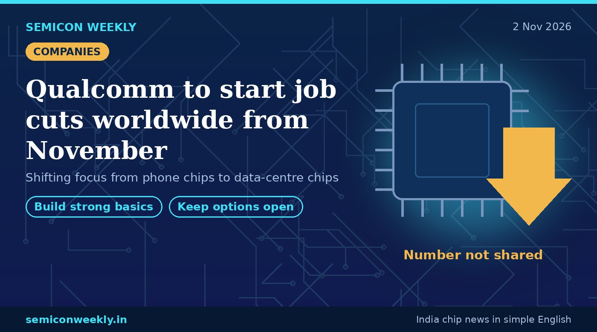

Qualcomm to start job cuts worldwide from November
The chip company is cutting jobs after yearly reviews, while it shifts focus beyond phone chips.

In short
- Qualcomm told its staff it will cut jobs around the world in a "performance-focused" move after yearly reviews.
- People who are let go will start hearing about it in November.
- The company did not say how many jobs will go. It is shifting from phone chips to data centre and other chips.
Key numbers
Nov 2026When affected staff start hearing
Not sharedNumber of jobs to be cut
WorldwideWhere the cuts apply
What happened
- Qualcomm informed employees about job cuts linked to its yearly performance reviews.
- The company called it "performance-focused".
- Affected employees will start getting the news in November.
- The number of jobs has not been shared. Qualcomm is moving more into data-centre and other chips beyond phones.
Why it matters
Why this is useful
- It shows how chip companies change their teams when their business focus moves.
- Knowing industry trends helps you choose skills and companies wisely.
Why it is good for freshers
- Qualcomm has big teams in Hyderabad and Bengaluru, so freshers should build strong basics and keep options open across many chip companies.
- Strong fundamentals (digital design, Verilog, verification, C) protect you in any market.
- Apply widely: service companies, startups and product companies, not only one big name.
Why it is good for India
- India stays a key engineering base for global chip firms, even when they reshape teams.
- New chip plants and design centres in India are adding jobs at the same time.
Words in this story
- Layoff / job cut: when a company ends some jobs to reduce cost or change direction.
- Data-centre chips: chips for servers that run cloud services and AI.